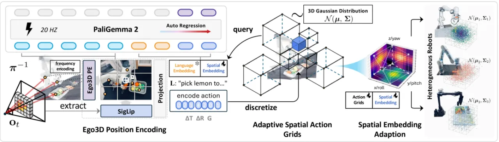
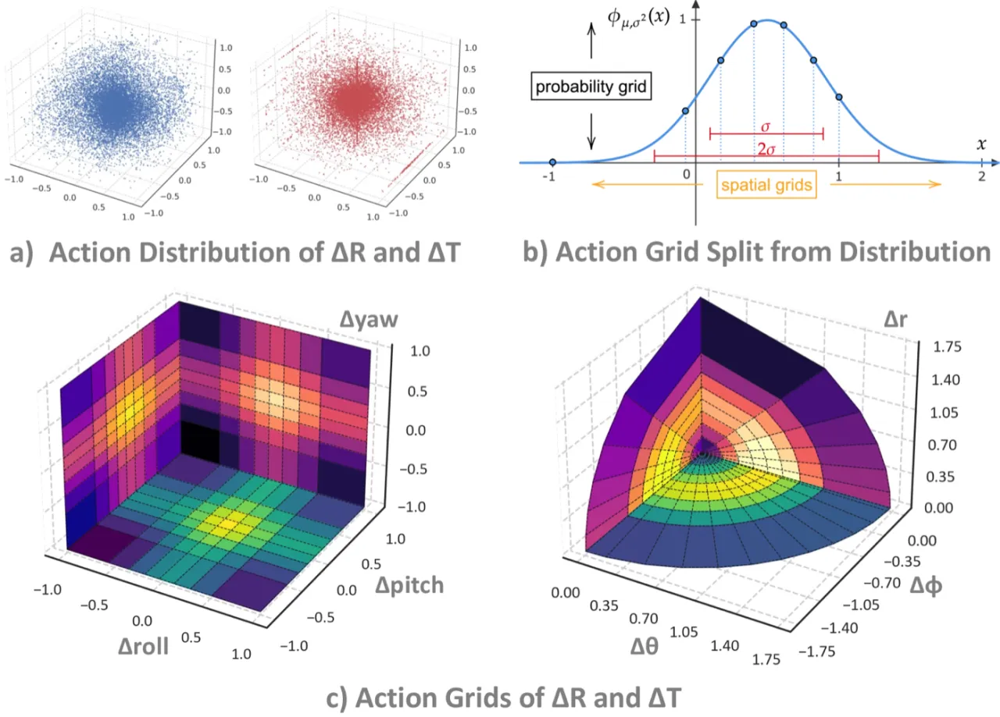
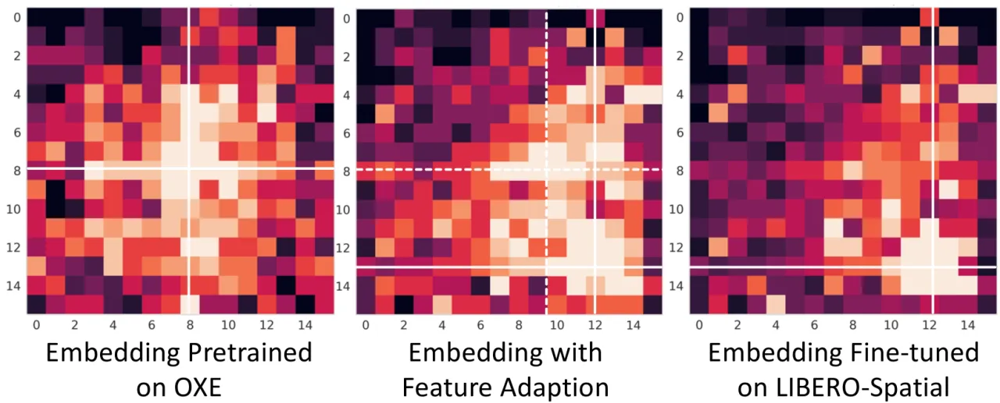
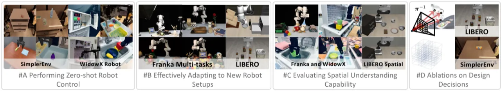
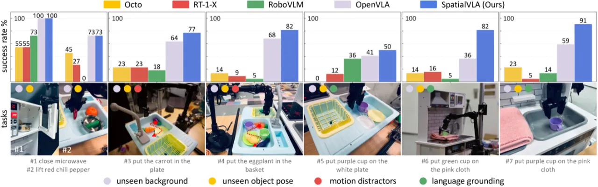
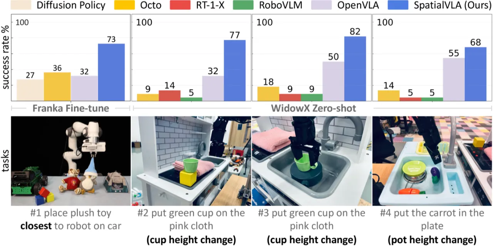

现有 VLA 模型缺乏显式的三维空间理解，导致在精细操作任务上泛化能力不足。SpatialVLA 提出 Ego3D Position Encoding 将深度信息融入视觉 token，并用 Adaptive Action Grids 将连续动作离散化为跨机器人可迁移的空间 token；在 1.1M 真实机器人数据上预训练后，实现强零样本迁移与高效微调。
机器人操作本质上是一个三维空间感知与动作规划问题，然而主流 VLA 模型（OpenVLA、Octo、RT-2-X 等）仅从 2D 图像 token 中学习动作，缺乏对物体位置、深度与空间布局的显式建模，在需要精细空间推理的任务（如堆叠、精确放置）上表现明显弱于专用方法。
"Spatial understanding is the key to robot manipulation … we propose SpatialVLA, a spatial visual-language-action model that focuses on exploring spatial representations for robot manipulation."

SpatialVLA 由两个核心模块构成：（1）Ego3D Position Encoding——将深度估计得到的三维坐标编码叠加到 SigLIP 视觉 token 上；（2）Adaptive Action Grids——根据训练集动作分布自适应离散化连续 7D 动作，并支持跨机器人迁移。
给定 RGB 图像，首先用 ZoeDepth 估计深度图，再通过相机内参将每个像素反投影为三维坐标 P（相机自身坐标系，无需外参标定）。三维位置用正弦函数 γ(·) 编码后经 MLP 映射，与 SigLIP 提取的 2D 语义特征 X 相加融合：
O3d = X + MLP(γ(P))
该设计以 plug-and-play 方式为视觉 token 注入空间感知，无需额外相机标定，适用于任意机器人平台。

将连续 7D 动作（平移 x,y,z；旋转 roll,pitch,yaw；夹爪）离散化为可学习 token。关键创新在于自适应分箱：先将平移转为极坐标 (φ, θ, r) 解耦方向与距离，再对各维度拟合 Gaussian 分布，按等概率划分 M 个区间，使每个 bin 覆盖相同比例的训练动作，避免传统线性分箱在长尾分布上的浪费。
跨机器人迁移：微调至新机器人时，对目标数据集重新拟合 Gaussian，通过三线性插值将预训练 token embedding 对齐到新网格，保留空间先验同时快速适应新动作分布（即 Spatial Embedding Adaptation）。

以 Qwen2 为语言骨干，SigLIP 为视觉编码器。预训练数据为 Open X-Embodiment (OXE) 中 1.1M 真实机器人 episodes 的混合（Google Fractal、BridgeV2 等多机器人数据集）。Action grid 分辨率默认 8194 token，覆盖平移 + 旋转 + 夹爪各维度。
评估涵盖三大维度：零样本控制（SimplerEnv）、适应新机器人（Franka + WidowX 微调）、空间理解能力（空间布局任务）。仿真基准 SimplerEnv 含 Google Robot 和 WidowX 两个平台，LIBERO 提供 4 个子任务集；真实机器人实验覆盖 7 类任务套件、16 个任务。

| 方法 | Visual Matching | Variant Aggregation |
|---|---|---|
| RT-2-X | 60.7% | — |
| OpenVLA | 16.3% | 46.2% |
| Octo-Base | 17.0% | 4.2% |
| RoboVLM (zero-shot) | 72.7% | 66.3% |
| π₀* (BF16 uniform) | 88.0% | 80.3% |
| SpatialVLA (zero-shot) | 81.0% | 69.6% |
| SpatialVLA (fine-tuning) | 86.0% | 77.9% |
| 方法 | 平均成功率 |
|---|---|
| RT-1-X | 1.1% |
| Octo-Small | 30.0% |
| OpenVLA | 1.0% |
| RoboVLM (zero-shot) | 13.5% |
| RoboVLM (fine-tuning) | 31.3% |
| SpatialVLA (zero-shot) | 34.4% |
| SpatialVLA (fine-tuning) | 42.7% |
| 方法 | LIBERO-Spatial | LIBERO-Object | LIBERO-Goal | LIBERO-Long | 平均 |
|---|---|---|---|---|---|
| Diffusion Policy | 78.3±1.1% | 92.5±0.7% | 68.3±1.2% | 50.5±1.3% | 72.4±0.7% |
| Octo fine-tuned | 78.9±1.0% | 85.7±0.9% | 84.6±0.9% | 51.1±1.3% | 75.1±0.6% |
| OpenVLA fine-tuned | 84.7±0.9% | 88.4±0.8% | 79.2±1.0% | 53.7±1.3% | 76.5±0.6% |
| TraceVLA fine-tuned | 84.6±0.2% | 85.2±0.4% | 75.1±0.3% | 54.1±1.0% | 74.8±0.5% |
| SpatialVLA fine-tuned | 88.2±0.5% | 89.9±0.7% | 78.6±0.6% | 55.5±1.0% | 78.1±0.7% |


预训练消融（表 IV）显示：将 Adaptive Grids 替换为线性 256-bin 分箱后，Variant Aggregation 指标下降约 36.5%；去除 Ego3D 编码后，Google Robot 零样本性能下降 12.7%–15.2%。Action grid 分辨率从 1026 提升至 8194 持续带来收益。
微调消融（表 V）显示：对小规模 LIBERO 数据，LoRA + Spatial Embedding Adaptation 优于全参数微调；Spatial Embedding Adaptation 单独贡献 LIBERO-Spatial +4.6%（83.6% → 88.2%）。
"Is modeling data distributions as Gaussian optimal? We argue that Gaussian modeling is suboptimal, as it can lead to grid clustering on specific coordinate axes in extreme robot operation scenarios, such as single-axis motion, resulting in lost motion capabilities on other axes."（单轴运动等极端场景下，Gaussian 拟合可能导致某些轴的网格过度聚集，使其他轴的运动能力退化。）
"As the model relies solely on current frame observations and history tokens for action prediction, it faces challenges in long-horizon tasks." 作者指出未来需要设计高效的历史信息感知机制以增强长序列建模能力。
"SpatialVLA achieves 21Hz inference speed, it is slower than diffusion decoding." 自回归 token 预测的推理开销高于基于扩散的策略网络，在对实时性要求极高的场景下存在瓶颈。
"The variable quality of OXE data can hinder training. Therefore, future work exploring optimal data composition and distilling high-quality subsets from the heterogeneous robot data collections is vital for boosting model efficiency and generalizability."